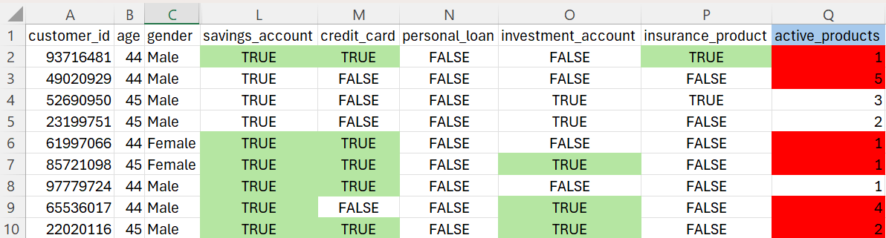
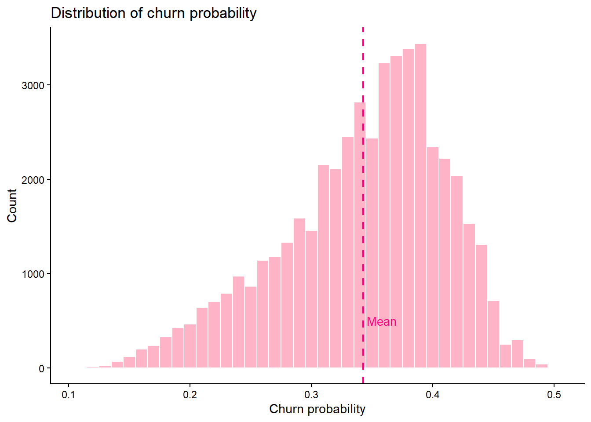
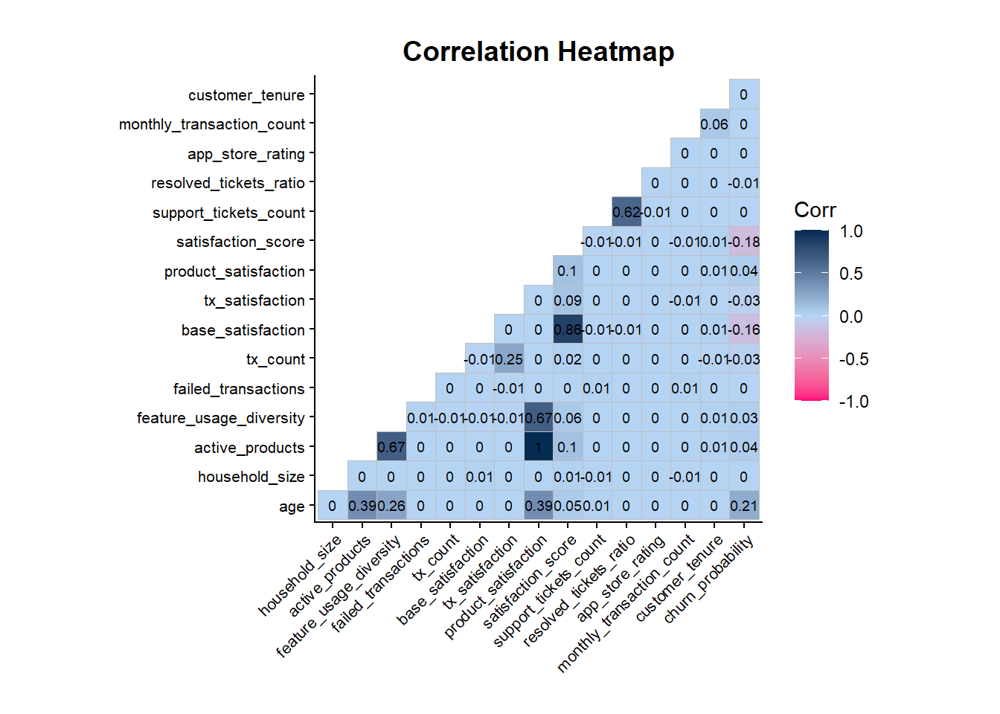
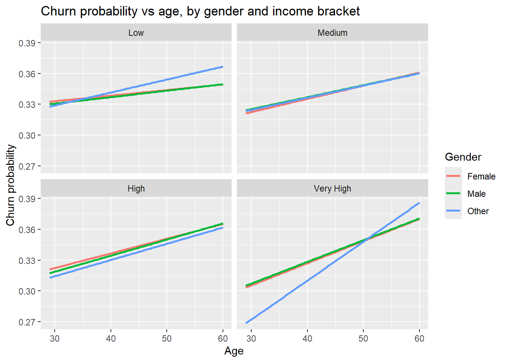
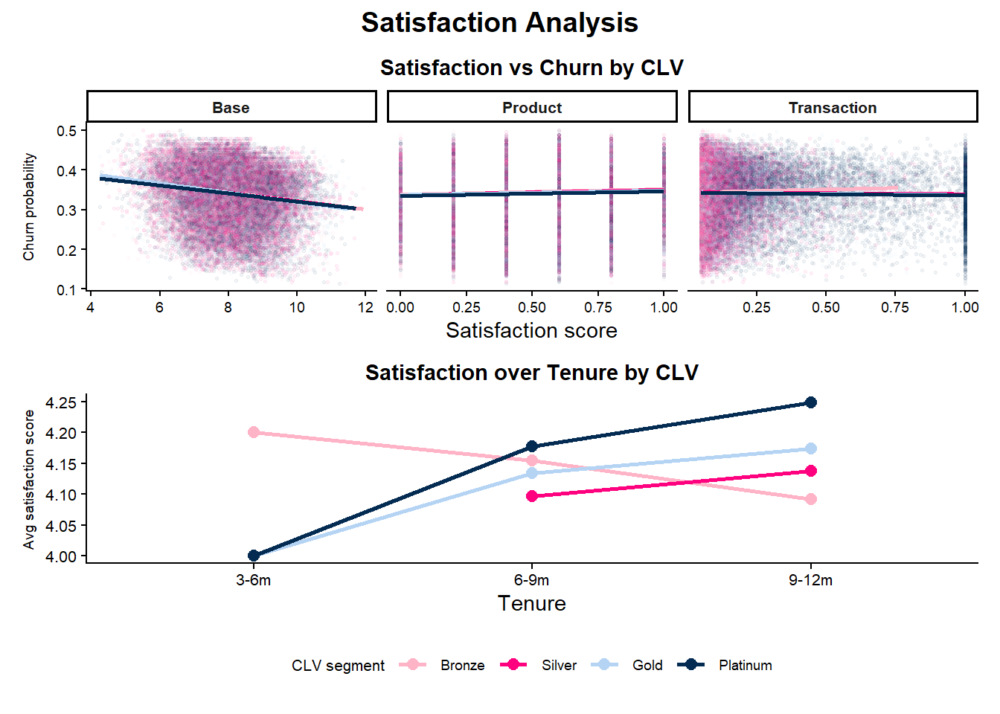
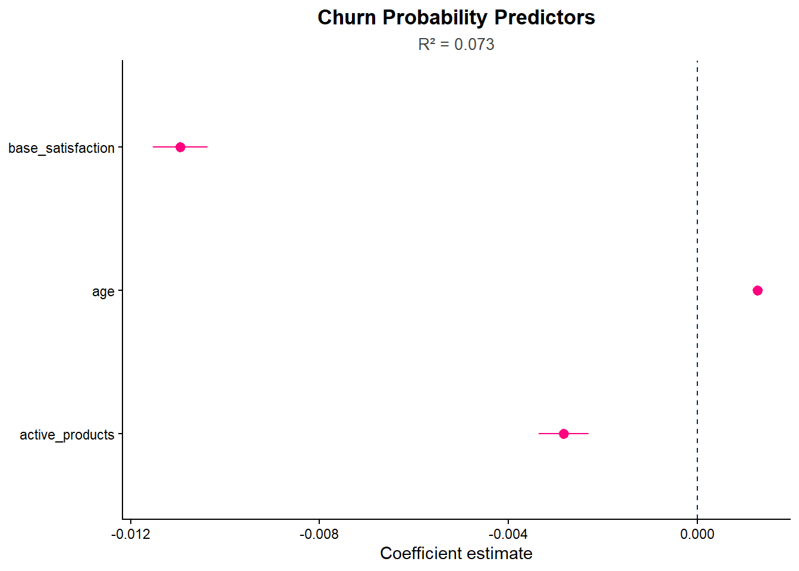
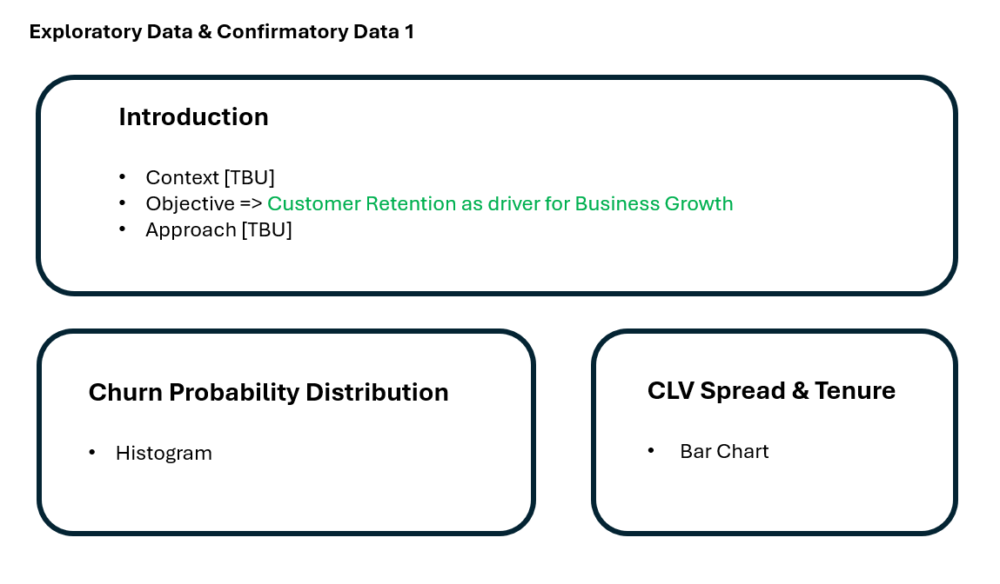
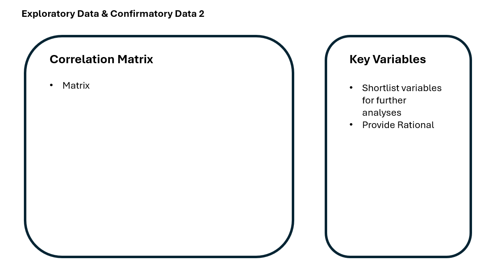
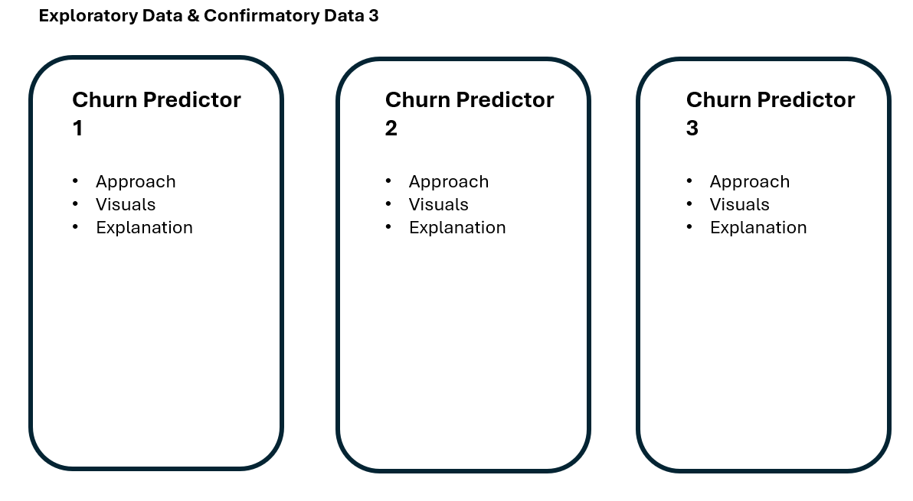
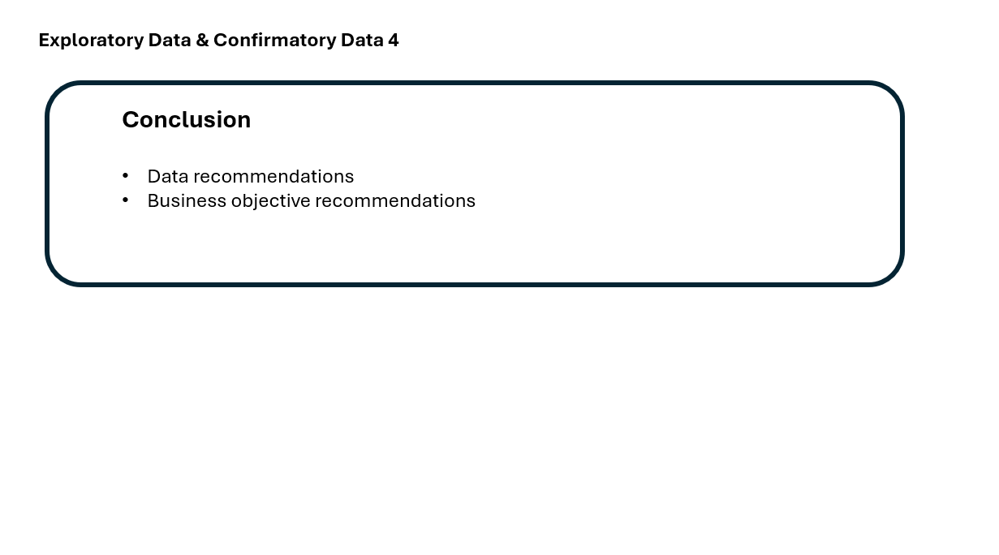

pacman::p_load(ggrepel, patchwork, tidyverse, tidyverse, scales, viridis, lubridate, knitr, png, ggcorrplot, broom)Take Home Exercise 2
Data Analysis of a Colombian Fintech Company
Install and Load Packages
Data Preparation
1. Load Data
original <- read_csv("customer.csv")Rows: 48723 Columns: 54
── Column specification ────────────────────────────────────────────────────────
Delimiter: ","
chr (13): gender, location, income_bracket, occupation, education_level, ma...
dbl (29): customer_id, age, household_size, active_products, app_logins_fre...
lgl (7): savings_account, credit_card, personal_loan, investment_account, ...
date (5): first_tx, last_tx, last_survey_date, last_transaction_date, first...
ℹ Use `spec()` to retrieve the full column specification for this data.
ℹ Specify the column types or set `show_col_types = FALSE` to quiet this message.2. Review Data
View data to understand the information persented.
view(original)- List variable names
colnames(original) [1] "customer_id" "age"
[3] "gender" "location"
[5] "income_bracket" "occupation"
[7] "education_level" "marital_status"
[9] "household_size" "acquisition_channel"
[11] "customer_segment" "savings_account"
[13] "credit_card" "personal_loan"
[15] "investment_account" "insurance_product"
[17] "active_products" "app_logins_frequency"
[19] "feature_usage_diversity" "bill_payment_user"
[21] "auto_savings_enabled" "credit_utilization_ratio"
[23] "international_transactions" "failed_transactions"
[25] "tx_count" "avg_tx_value"
[27] "total_tx_volume" "first_tx"
[29] "last_tx" "base_satisfaction"
[31] "tx_satisfaction" "product_satisfaction"
[33] "satisfaction_score" "nps_score"
[35] "last_survey_date" "support_tickets_count"
[37] "resolved_tickets_ratio" "app_store_rating"
[39] "feedback_sentiment" "feature_requests"
[41] "complaint_topics" "clv_segment"
[43] "monthly_transaction_count" "average_transaction_value"
[45] "total_transaction_volume" "transaction_frequency"
[47] "last_transaction_date" "preferred_transaction_type"
[49] "first_transaction_date" "weekend_transaction_ratio"
[51] "avg_daily_transactions" "customer_tenure"
[53] "churn_probability" "customer_lifetime_value" - Missing Values Table
missing_count <- colSums(is.na(original))
missing_table <- data.frame(
Variable = names(missing_count)[missing_count > 0],
MissingCount = missing_count[missing_count > 0]
)
print(missing_table) Variable MissingCount
credit_utilization_ratio credit_utilization_ratio 18263
feature_requests feature_requests 16115
complaint_topics complaint_topics 243463. Data Wrangling
- Calculate
The column ‘active_products’ does not tally with the five product offerings. A new value will be calculated.

- Convert
The below columns will be converted to ‘Date’ format.
- “first_tx”
- “last_tx”
- “last_survey_date”
- “last_transaction_date”
- “first_transaction_date”
- Duplicate
- “average_transaction_value”
- “total_transaction_volume”
- “first_transaction_date”
- Replace
Values for ‘feature_requests’ and ‘complaint_topics’ will be converted to ‘1’ if there is a response and ‘0’ if there is none for more meaningful
products <- c("savings_account", "credit_card", "personal_loan",
"investment_account", "insurance_product")
original <- original %>%
mutate(active_products = rowSums(across(all_of(products))))
date_cols <- c("first_tx", "last_tx", "last_survey_date",
"last_transaction_date", "first_transaction_date")
original <- original %>%
mutate(across(all_of(date_cols), ~ as.Date(.x, format = "%Y-%m-%d")))
original <- original %>%
select(-average_transaction_value,
-total_transaction_volume,
-first_transaction_date)
original <- original %>%
mutate(
has_complaint = as.integer(!is.na(complaint_topics)),
has_feature_request = as.integer(!is.na(feature_requests))
)
write_csv(original, "customer_clean.csv")Exploratory Data Analysis
customer_clean <- read_csv("customer_clean.csv")Rows: 48723 Columns: 53
── Column specification ────────────────────────────────────────────────────────
Delimiter: ","
chr (13): gender, location, income_bracket, occupation, education_level, ma...
dbl (29): customer_id, age, household_size, active_products, app_logins_fre...
lgl (7): savings_account, credit_card, personal_loan, investment_account, ...
date (4): first_tx, last_tx, last_survey_date, last_transaction_date
ℹ Use `spec()` to retrieve the full column specification for this data.
ℹ Specify the column types or set `show_col_types = FALSE` to quiet this message.1. Distribution of Churn Probability
ggplot(customer_clean, aes(x = churn_probability)) +
geom_histogram(binwidth = 0.01, fill = "#FFB3C6", colour = "white") +
geom_vline(xintercept = mean(customer_clean$churn_probability),
colour = "#FF007F", linetype = "dashed", linewidth = 0.8) +
annotate("text", x = mean(customer_clean$churn_probability) + 0.015,
y = 500, label = "Mean", colour = "#FF007F", size = 3.5) +
labs(title = "Distribution of churn probability",
x = "Churn probability", y = "Count") +
theme_classic()
A histogram is chosen to show the distribution of the churn probability
Key observations:
- All customers have churn risk.
- Most customers are moderate to high risk (skewed towards the right).
- The churn probability is capped at 0.5 which is strange.
2. Correlation Matrix of Selected Variables
variables <- c("age", "household_size", "active_products", "feature_usage_diversity",
"failed_transactions", "tx_count", "base_satisfaction", "tx_satisfaction",
"product_satisfaction", "satisfaction_score", "support_tickets_count",
"resolved_tickets_ratio", "app_store_rating", "monthly_transaction_count",
"customer_tenure", "churn_probability")
corrmatrix <- cor(customer_clean[, variables], use = "pairwise.complete.obs")
ggcorrplot(corrmatrix,
method = "square",
type = "lower",
lab = TRUE,
lab_size = 2.5,
tl.cex = 9,
colors = c("#FF007F", "#B5D4F4", "#042C53"),
title = "Correlation Heatmap") +
theme_classic() +
theme(plot.title = element_text(size = 14, face = "bold", hjust = 0.5),
axis.text.x = element_text(angle = 45, hjust = 1, size = 8),
axis.text.y = element_text(size = 8),
axis.title = element_blank(),
plot.margin = margin(20, 20, 20, 20))
A correlation heatmap allows the relationships between the variables selected to be explored simultaneously.
Key observations:
- The strongest positive correlation is between the number of products and features used.
- There is strong correlation between age and churn probability.
- The base satisfaction and satisfaction scores are highly correlated.
3. Churn Probability & Age, Gender, Income Bracket
customer_clean %>%
mutate(income_bracket = factor(income_bracket,
levels = c("Low","Medium","High","Very High"))) %>%
ggplot(aes(x = age, y = churn_probability, colour = gender)) +
geom_smooth(method = "lm", se = FALSE) +
facet_wrap(~ income_bracket) +
labs(title = "Churn probability vs age, by gender and income bracket",
x = "Age", y = "Churn probability", colour = "Gender")`geom_smooth()` using formula = 'y ~ x'
A faceted line plot is used for this analysis as it allows for clear comparison across the variables selected. The age-churn relationship can be seen across income and gender groups.
Key observations:
- Age is positively correlated with churn across every group.
- This increases at higher income levels, especially for Gender = ‘Other’
- There is not much differentiation for Genders = ‘Male’ and ‘Female’ at lower income levels.
4. Satisfaction Exploratory Analysis
p1 <- customer_clean %>%
select(clv_segment, base_satisfaction, tx_satisfaction,
product_satisfaction, churn_probability) %>%
pivot_longer(cols = c(base_satisfaction, tx_satisfaction, product_satisfaction),
names_to = "satisfaction_type",
values_to = "score") %>%
mutate(
satisfaction_type = recode(satisfaction_type,
"base_satisfaction" = "Base",
"tx_satisfaction" = "Transaction",
"product_satisfaction" = "Product"),
clv_segment = factor(clv_segment,
levels = c("Bronze", "Silver", "Gold", "Platinum"))
) %>%
ggplot(aes(x = score, y = churn_probability, colour = clv_segment)) +
geom_point(alpha = 0.05, size = 0.6) +
geom_smooth(method = "lm", se = FALSE, linewidth = 1) +
scale_colour_manual(values = c("#FFB3C6", "#FF007F", "#B5D4F4", "#042C53")) +
facet_wrap(~ satisfaction_type, ncol = 3, scales = "free_x") +
labs(title = "Satisfaction vs Churn by CLV",
x = "Satisfaction score",
y = "Churn probability",
colour = "CLV segment") +
theme_classic() +
theme(
plot.title = element_text(size = 11, face = "bold", hjust = 0.5),
strip.text = element_text(size = 8, face = "bold"),
axis.text = element_text(size = 7),
axis.title.y = element_text(size = 7, margin = margin(r = 5)),
legend.position = "none"
)
p2 <- customer_clean %>%
mutate(
tenure_bucket = cut(customer_tenure,
breaks = c(0, 3, 6, 9, 12, Inf),
labels = c("0-3m", "3-6m", "6-9m", "9-12m", "12m+")),
clv_segment = factor(clv_segment,
levels = c("Bronze", "Silver", "Gold", "Platinum"))
) %>%
group_by(tenure_bucket, clv_segment) %>%
summarise(avg_satisfaction = mean(satisfaction_score, na.rm = TRUE),
.groups = "drop") %>%
ggplot(aes(x = tenure_bucket, y = avg_satisfaction,
colour = clv_segment, group = clv_segment)) +
geom_line(linewidth = 1) +
geom_point(size = 2.5) +
scale_colour_manual(values = c("#FFB3C6", "#FF007F", "#B5D4F4", "#042C53")) +
labs(title = "Satisfaction over Tenure by CLV",
x = "Tenure",
y = "Avg satisfaction score",
colour = "CLV segment") +
theme_classic() +
theme(
plot.title = element_text(size = 11, face = "bold", hjust = 0.5),
axis.text = element_text(size = 8),
axis.title.y = element_text(size = 7, margin = margin(r = 5)),
legend.position = "bottom",
legend.title = element_text(size = 8),
legend.text = element_text(size = 7)
)
p1 / p2 +
plot_annotation(
title = "Satisfaction Analysis",
theme = theme(plot.title = element_text(size = 14, face = "bold",
hjust = 0.5))
)`geom_smooth()` using formula = 'y ~ x'
A scatter plot shows the relationship between satisfaction scores and churn probability across the three types of satisfaction scores.
A line chart is used to show changes over tenure (time) to facilitate trend analysis.
CLV is introduced into both graphs for consistency and adds another dimension which can be used for further analyses.
Key observations:
- Product satisfaction does not align with the other two satisfaction measures and appears to be categorical rating.
- CLV categories appear to overlap completely based on the scatter plot.
- Satisfaction for “Bronze” customers trends downwards over time compared to others.
Confirmatory Data Analysis
customer_clean <- read_csv("customer_clean.csv")Rows: 48723 Columns: 53
── Column specification ────────────────────────────────────────────────────────
Delimiter: ","
chr (13): gender, location, income_bracket, occupation, education_level, ma...
dbl (29): customer_id, age, household_size, active_products, app_logins_fre...
lgl (7): savings_account, credit_card, personal_loan, investment_account, ...
date (4): first_tx, last_tx, last_survey_date, last_transaction_date
ℹ Use `spec()` to retrieve the full column specification for this data.
ℹ Specify the column types or set `show_col_types = FALSE` to quiet this message.1. Pearson Correlation Tests
- Age vs Churn Probability
cor.test(customer_clean$age,
customer_clean$churn_probability,
method = "pearson")
Pearson's product-moment correlation
data: customer_clean$age and customer_clean$churn_probability
t = 47.72, df = 48721, p-value < 2.2e-16
alternative hypothesis: true correlation is not equal to 0
95 percent confidence interval:
0.2028135 0.2197793
sample estimates:
cor
0.2113123 - Products vs Feature Usage
cor.test(customer_clean$active_products,
customer_clean$feature_usage_diversity,
method = "pearson")
Pearson's product-moment correlation
data: customer_clean$active_products and customer_clean$feature_usage_diversity
t = 198.35, df = 48721, p-value < 2.2e-16
alternative hypothesis: true correlation is not equal to 0
95 percent confidence interval:
0.6634564 0.6732817
sample estimates:
cor
0.6683982 - Base Satisfaction vs Satisfaction Score
cor.test(customer_clean$base_satisfaction,
customer_clean$satisfaction_score,
method = "pearson")
Pearson's product-moment correlation
data: customer_clean$base_satisfaction and customer_clean$satisfaction_score
t = 364.73, df = 48721, p-value < 2.2e-16
alternative hypothesis: true correlation is not equal to 0
95 percent confidence interval:
0.8531324 0.8578932
sample estimates:
cor
0.8555309 Multiple Linear Regression Model
churn_model <- lm(churn_probability ~ age + base_satisfaction +
active_products,
data = customer_clean)
summary(churn_model)
Call:
lm(formula = churn_probability ~ age + base_satisfaction + active_products,
data = customer_clean)
Residuals:
Min 1Q Median 3Q Max
-0.23168 -0.03939 0.01154 0.04971 0.12840
Coefficients:
Estimate Std. Error t value Pr(>|t|)
(Intercept) 3.809e-01 2.594e-03 146.88 <2e-16 ***
age 1.264e-03 2.586e-05 48.88 <2e-16 ***
base_satisfaction -1.095e-02 2.930e-04 -37.38 <2e-16 ***
active_products -2.834e-03 2.708e-04 -10.46 <2e-16 ***
---
Signif. codes: 0 '***' 0.001 '**' 0.01 '*' 0.05 '.' 0.1 ' ' 1
Residual standard error: 0.06457 on 48719 degrees of freedom
Multiple R-squared: 0.07321, Adjusted R-squared: 0.07315
F-statistic: 1283 on 3 and 48719 DF, p-value: < 2.2e-16tidy(churn_model, conf.int = TRUE) %>%
filter(term != "(Intercept)") %>%
ggplot(aes(x = estimate, y = term, xmin = conf.low, xmax = conf.high)) +
geom_pointrange(colour = "#FF007F") +
geom_vline(xintercept = 0, linetype = "dashed", colour = "#042C53") +
labs(title = "Churn Probability Predictors",
subtitle = paste("R² =", round(summary(churn_model)$r.squared, 3)),
x = "Coefficient estimate",
y = NULL) +
theme_classic() +
theme(plot.title = element_text(size = 13, face = "bold", hjust = 0.5),
plot.subtitle = element_text(size = 10, hjust = 0.5, colour = "#444441"))
Key observations:
- Age increases churn probability.
- Increases in product usage reduces churn probability.
- Higher satisfaction reduces churn probability.
Overall model score is low (0.073) so there are other factors which are more significant in explaining churn probability.
2. ANOVA Tests (Churn Probability)
- One-way ANOVA - Churn Probability & Income
anova_income <- aov(churn_probability ~ income_bracket, data = customer_clean)
summary(anova_income) Df Sum Sq Mean Sq F value Pr(>F)
income_bracket 3 1.09 0.3622 80.9 <2e-16 ***
Residuals 48719 218.11 0.0045
---
Signif. codes: 0 '***' 0.001 '**' 0.01 '*' 0.05 '.' 0.1 ' ' 1- One-way ANOVA - Churn Probability & Gender
anova_gender <- aov(churn_probability ~ gender, data = customer_clean)
summary(anova_gender) Df Sum Sq Mean Sq F value Pr(>F)
gender 2 0.0 0.000280 0.062 0.94
Residuals 48720 219.2 0.004499 - Two-way ANOVA - Churn Probability & Income, Gender
anova_interaction <- aov(churn_probability ~ income_bracket * gender,
data = customer_clean)
summary(anova_interaction) Df Sum Sq Mean Sq F value Pr(>F)
income_bracket 3 1.09 0.3622 80.892 <2e-16 ***
gender 2 0.00 0.0003 0.059 0.943
income_bracket:gender 6 0.03 0.0043 0.952 0.456
Residuals 48711 218.08 0.0045
---
Signif. codes: 0 '***' 0.001 '**' 0.01 '*' 0.05 '.' 0.1 ' ' 1Key observations:
- Gender is insignificant for churn prediction.
- Income is statistically significant but a weak predictor.
3. ANOVA Tests (CLV)
- One-way ANOVA - CLV & Churn Probability
anova_clv <- aov(churn_probability ~ clv_segment, data = customer_clean)
summary(anova_clv) Df Sum Sq Mean Sq F value Pr(>F)
clv_segment 3 0.11 0.03516 7.818 3.26e-05 ***
Residuals 48719 219.09 0.00450
---
Signif. codes: 0 '***' 0.001 '**' 0.01 '*' 0.05 '.' 0.1 ' ' 1- One-way ANOVA - CLV & Satisfaction
anova_sat <- aov(satisfaction_score ~ clv_segment, data = customer_clean)
summary(anova_sat) Df Sum Sq Mean Sq F value Pr(>F)
clv_segment 3 157 52.28 157.7 <2e-16 ***
Residuals 48719 16147 0.33
---
Signif. codes: 0 '***' 0.001 '**' 0.01 '*' 0.05 '.' 0.1 ' ' 1Key observation:
- CLV predicts satisfaction but not churn.
UI Story Board
Screen 1
The homepage tab will introduce the user churn probability modeling with the objective of customer retention.
The customer information & tenure is also shown on the same page, allowing the user to hover to view corresponding tenure.

Screen 2
Correlation matrix will be shown with selection of key variables on the right hand side. Hover for detailed rationale.

Screen 3
Churn predictors displayed can be moved around for side-by-side comparison.

Screen 4
Conclusion with data and business recommendations
